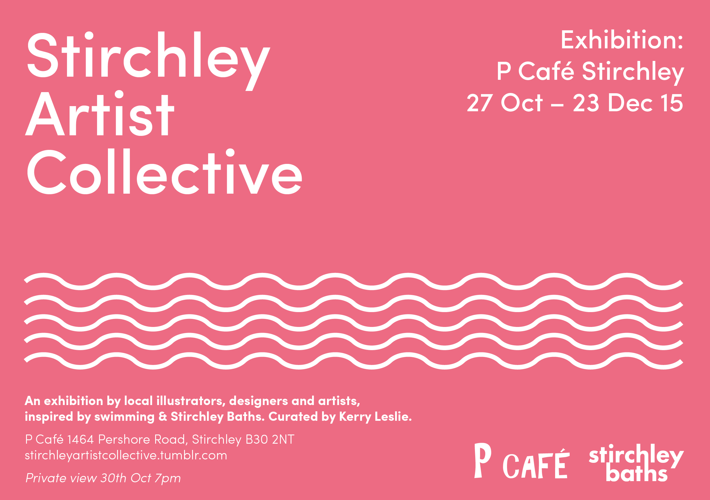

Stirchley Artist Collective: Swimming exhibition

In celebration of the imminent re-opening of the Stirchley Baths as a community centre – after two-decade dereliction – local resident and graphic designer Kerry, has brought together a number of Stirchley-based artists, designers and illustrators, to produce a piece of work to be part of a collection inspired by swimming and Stirchley Baths. Artists include: Carla … [Read more…]